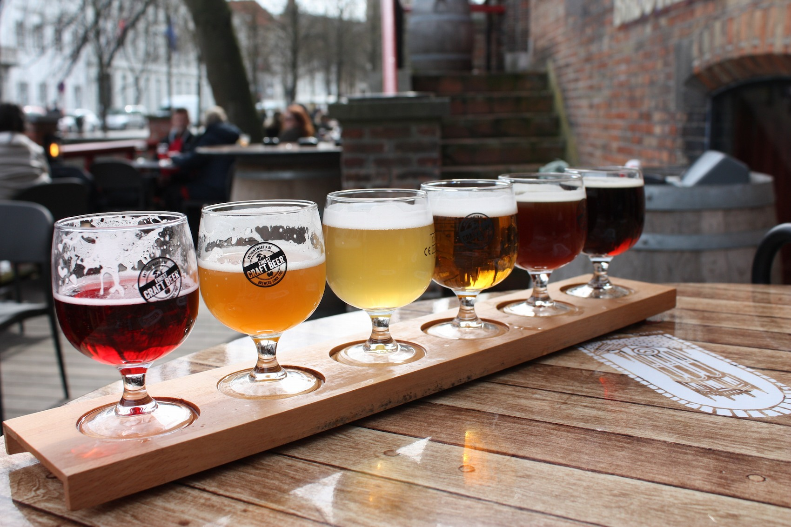

Beers With Breakfast Pairings
The Intro
The Pairings

Photo by
Sal Gh
on
Unsplash
The Pairings: Our Favourite Ales with Brunch
Eggs Benedict and Newcastle Brown Ale
Pancakes with Shock Top
Avocado Toast and Wild Rose IPA
Belgian Waffles with Kronenbourg 1664 Blanc
Oatmeal and Glutenberg